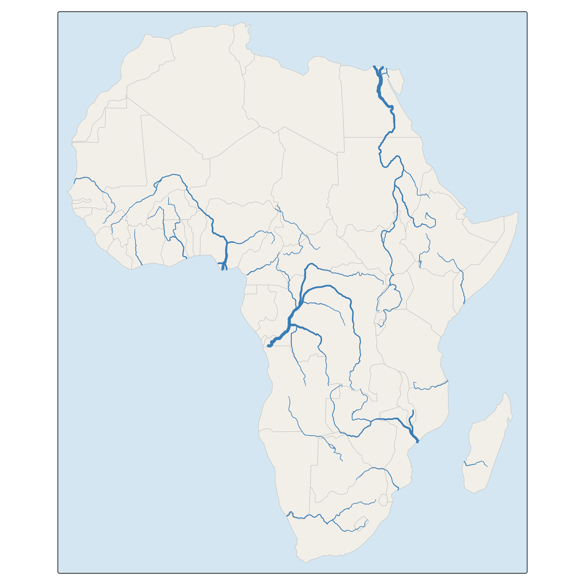
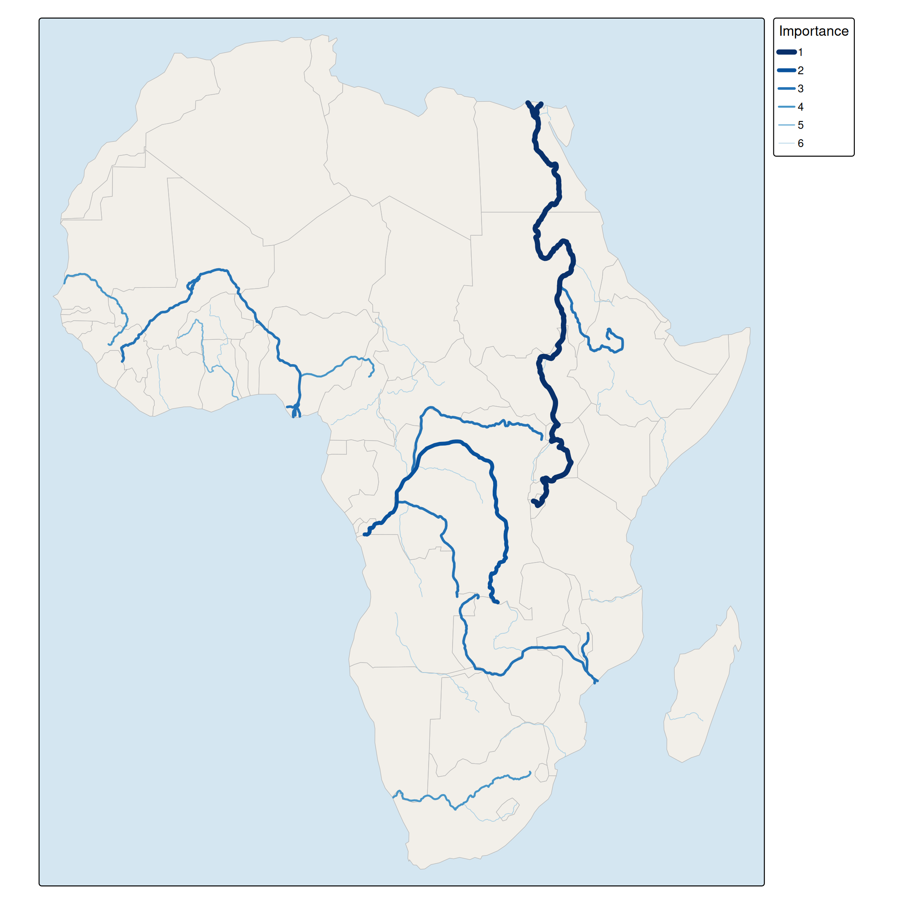
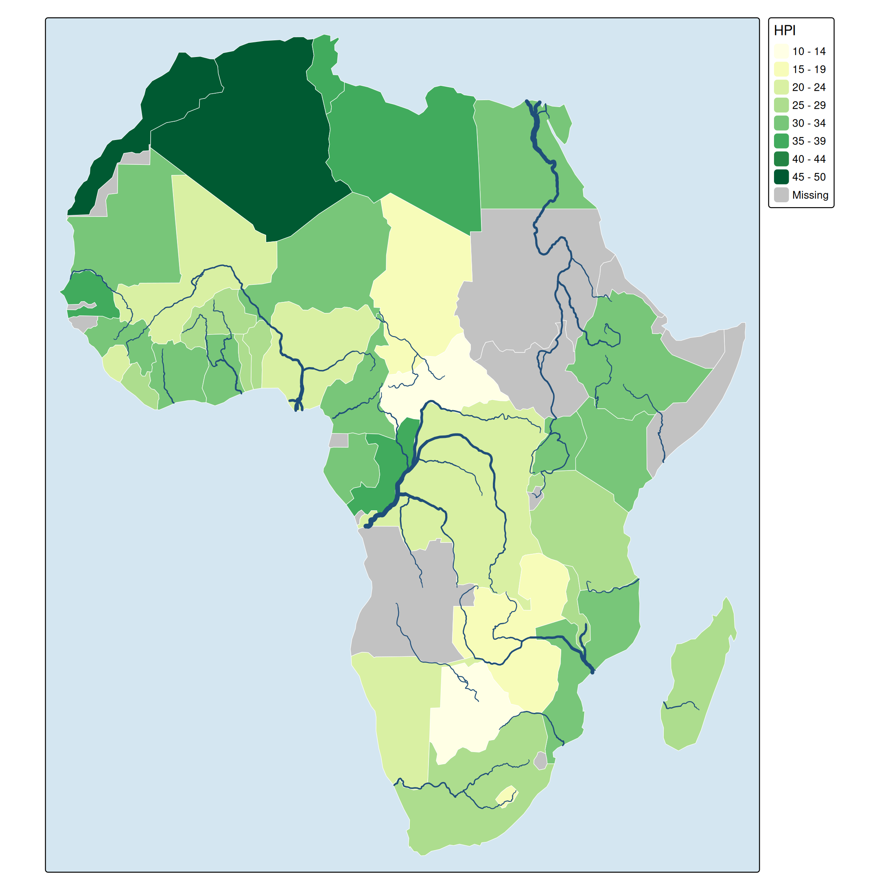

library(tmap)
library(sf)
tmap_options(scale = 0.75)Line maps show linear features, such as rivers, roads, and routes. The main map variables are the line width (lwd) and the line color (col). In this example, we map the rivers of Africa.
About the data
World_rivers contains the main rivers and lakes of the world. The variable strokelwd is a line width that increases downstream, and scalerank indicates the importance (1 is the most important):
head(World_rivers)
#> Simple feature collection with 6 features and 4 fields
#> Geometry type: MULTILINESTRING
#> Dimension: XY
#> Bounding box: xmin: -94.637 ymin: 40.722 xmax: 0.891 ymax: 47.456
#> Geodetic CRS: WGS 84
#> name type scalerank strokelwd
#> 1 <NA> River 5 2.0
#> 2 Ebro River 5 1.5
#> 3 Ebro River 5 2.0
#> 4 Ebro River 5 2.5
#> 5 Ebro River 5 3.0
#> 6 Mississippi Lake Centerline 5 2.0
#> geometry
#> 1 MULTILINESTRING ((-72.991 4...
#> 2 MULTILINESTRING ((-4.189 43...
#> 3 MULTILINESTRING ((-1.748 42...
#> 4 MULTILINESTRING ((-1.748 42...
#> 5 MULTILINESTRING ((0.395 41....
#> 6 MULTILINESTRING ((-94.507 4...We select the rivers in Africa:
Africa = World[World$continent == "Africa", ]
sf_use_s2(FALSE)
rivers = st_intersection(World_rivers, st_union(Africa))
sf_use_s2(TRUE)Line widths as they are
The variable strokelwd already contains line widths, so it is used as it is, with tm_scale_asis(). The argument values.scale makes all lines thinner or thicker:
tm_shape(Africa, crs = "+proj=robin") +
tm_polygons(fill = "#F2EFE9", col = "grey70", lwd = 0.5) +
tm_shape(rivers) +
tm_lines(lwd = "strokelwd", lwd.scale = tm_scale_asis(values.scale = 0.5),
col = "#3A7DB5") +
tm_layout(bg.color = "#D4E6F1")
Line widths and colors as map variables
Data variables can also be mapped to line widths and colors with a scale and a legend. Here, the importance of a river is mapped to both the line width and the color. Since scalerank is a rank (1 is the most important), the scale is reversed with a decreasing sequence of line widths, and the two legends are combined:
tm_shape(Africa, crs = "+proj=robin") +
tm_polygons(fill = "#F2EFE9", col = "grey70", lwd = 0.5) +
tm_shape(rivers) +
tm_lines(
lwd = "scalerank",
lwd.scale = tm_scale_categorical(values = c(4, 3, 2, 1.5, 1, 0.5)),
lwd.legend = tm_legend("Importance"),
col = "scalerank",
col.scale = tm_scale_categorical(values = "-brewer.blues", values.range = c(0.35, 1)),
col.legend = tm_legend_combine("lwd")) +
tm_layout(bg.color = "#D4E6F1")
Lines on top of a choropleth
Lines can be combined with other layers. In this map, the rivers are drawn on top of a choropleth of the Happy Planet Index:
tm_shape(Africa, crs = "+proj=robin") +
tm_polygons(fill = "HPI", fill.scale = tm_scale_intervals(values = "brewer.yl_gn"),
col = "white", lwd = 0.5) +
tm_shape(rivers) +
tm_lines(lwd = "strokelwd", lwd.scale = tm_scale_asis(values.scale = 0.5),
col = "#1F4E79") +
tm_layout(bg.color = "#D4E6F1")
For a network, such as roads or rail, see the extension package tmap.networks. For lines with a data-driven width that represent flows, tm_lines() can be used in the same way, with the flow volume mapped to lwd.